AI生成
单人初审 · test_only · 少文字多图 · 2026-09-21
结论一句话：表格不是“没找到”，而是“找到了但结构解不对”；公式不是单纯漏检，而是类别、匹配和符号三重问题。 TEDS/CDM 是相似度，不是正确率。本报告为单人看图初审，P0/P1 仍待复核确认。
| 模式 | 现象 | 主根因 | 典型指标 |
|---|---|---|---|
| A 漏检/类别错 | 整表无框；公式变 Text | model_layout | TEDS=0 / CDM=0 |
| B 结构打散 | 格内换行当新行、rowspan 压平 | model_table | TEDS 0.19–0.47 |
| C 拆表/丢表头 | 一表多块、表头丢失 | model_layout | IoU 0.06–0.64 |
| D 公式内容/匹配 | “高”→1/10、匹配无关式 | model_formula / evaluation_matching | CDM 0.39–0.67 |
| E 文字/符号 | 错字、标点、LaTeX 不一致 | model_table / model_formula | 高分段仍有实质错 |
| F 框错位 | GT 与预测框不重叠 / 一表多框 | model_layout / evaluation_matching | IoU 0–0.64 |
绿框 = GT 诊断元素 bbox，红框 = 同页 MonkeyOCR 预测块。页面坐标系，按比例缩放。
GT 细长表（绿）与唯一 Table 预测框（红）完全不重叠 → IoU=0
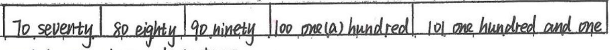
一张 GT 表被切成两个预测框，表头段与主体段各自残缺
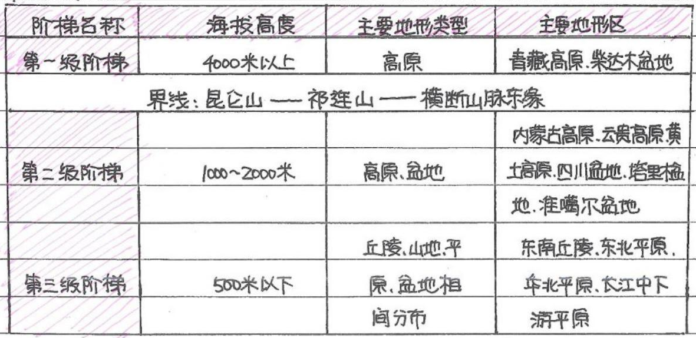
同页零个 Formula 框；内容落在 Text 类别（未画红框）
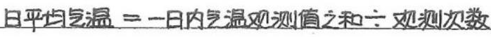
GT 面积公式（绿）vs 三个 Formula 预测框（红）均 IoU=0
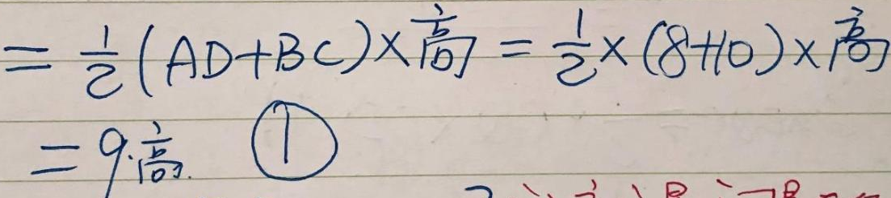
最佳预测框仅擦边，IoU=0.06
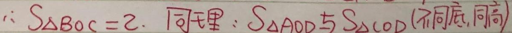
预测框过宽且多切出尾巴，IoU=0.26
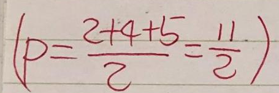
GT 区域存在，预测框不覆盖，或被收成 Text 导致公式指标为 0。
原图是一行 “70 seventy | 80 eighty | …”。预测框从 y=306 开始，完全不覆盖本表（IoU=0），却输出了下方另一张序数表的内容。TEDS=0。
<table border="1"><tr><td>70 seventy</td><td>80so eighty</td><td>90 ninety</td><td>100 one(a) hundred</td><td>101 one hundred and one</td></tr></table>| 70 seventy | 80so eighty | 90 ninety | 100 one(a) hundred | 101 one hundred and one |
<table><tr><td>1st</td><td>first</td><td>9th</td><td>ninth</td><td>17th</td><td>seventeenth</td><td>21st</td><td>twenty-first</td></tr><tr><td>2nd</td><td>second</td><td>10th</td><td>teenth</td><td>18th</td><td>eighteenth</td><td>22nd</td><td>twenty-second</td></tr><tr><td>3rd</td><td>third</td><td>11th</td><td>eleventh</td><td>19th</td><td>nineteenth</td><td>23rd</td><td>twenty-third</td></tr><tr><td>4th</td><td>fourth</td><td>12th</td><td>twelfth</td><td>20th</td><td>twentieth</td><td>35th</td><td>thirty-fifth</td></tr><tr><td>5th</td><td>fifth</td><td>13th</td><td>thirteenth</td><td>30th</td><td>thirtieth</td><td>101st</td><td>one hundred</td></tr><tr><td>6th</td><td>sixth</td><td>14th</td><td>fourteenth</td><td>80th</td><td>eightieth</td><td>and first</td><td></td></tr><tr><td>7th</td><td>seventh</td><td>15th</td><td>fifteenth</td><td>90th</td><td>ninetieth</td><td></td><td></td></tr><tr><td>8th</td><td>eighth</td><td>16th</td><td>sixteenth</td><td>100th</td><td>one hundredth</td><td></td><td></td></tr></table>| 1st | first | 9th | ninth | 17th | seventeenth | 21st | twenty-first |
| 2nd | second | 10th | teenth | 18th | eighteenth | 22nd | twenty-second |
| 3rd | third | 11th | eleventh | 19th | nineteenth | 23rd | twenty-third |
| 4th | fourth | 12th | twelfth | 20th | twentieth | 35th | thirty-fifth |
| 5th | fifth | 13th | thirteenth | 30th | thirtieth | 101st | one hundred |
| 6th | sixth | 14th | fourteenth | 80th | eightieth | and first | |
| 7th | seventh | 15th | fifteenth | 90th | ninetieth | ||
| 8th | eighth | 16th | sixteenth | 100th | one hundredth |
原图是“日平均气温=…÷观测次数”。同页无 Formula 框；内容出现在 Text 块（IoU=0.83），公式评测按 0 计。
与上条同页，Text IoU=0.93，类别仍不是 Formula。
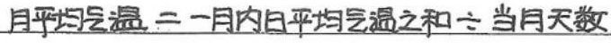
Text 中“=”被认成“二”、“÷”被认成“六”。类别错误 + 少量错字。
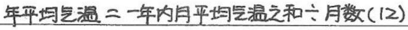
检测框基本正确（IoU 常 ≥0.9），但行列 / 跨行关系被拆坏。这是当前 TEDS 的主要失分点。
原图两行三列，中间列文字在同一格内换行。预测拆成 4 行并写 rowspan，结构完全变样。
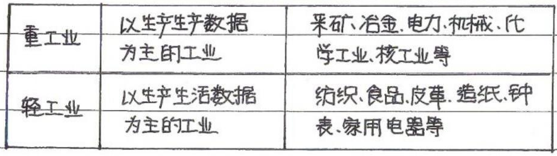
<table border="1"><tr><td>重工业</td><td>以生产生产数据为主的工业</td><td>采矿、冶金、电力、机械、化学工业、核工业等</td></tr><tr><td>轻工业</td><td>以生产生活数据为主的工业</td><td>纺织、食品、皮革、造纸、钟表、家用电器等</td></tr></table>| 重工业 | 以生产生产数据为主的工业 | 采矿、冶金、电力、机械、化学工业、核工业等 |
| 轻工业 | 以生产生活数据为主的工业 | 纺织、食品、皮革、造纸、钟表、家用电器等 |
<table><tr><td rowspan="2">重工业</td><td>以生产生产数据</td><td rowspan="2">采矿、冶金、电力、机械、化学工业、核工业等</td></tr><tr><td>为主的工业</td></tr><tr><td rowspan="2">轻工业</td><td>以生产生活数据</td><td rowspan="2">纺织、食品、皮革、造纸、钟表、家用电器等</td></tr><tr><td>为主的工业</td></tr></table>| 重工业 | 以生产生产数据 | 采矿、冶金、电力、机械、化学工业、核工业等 |
| 为主的工业 | ||
| 轻工业 | 以生产生活数据 | 纺织、食品、皮革、造纸、钟表、家用电器等 |
| 为主的工业 |
原图“国内/国际”跨行 + 右侧“走可持续发展道路”纵向合并。预测压成 2 行，rowspan 全丢。
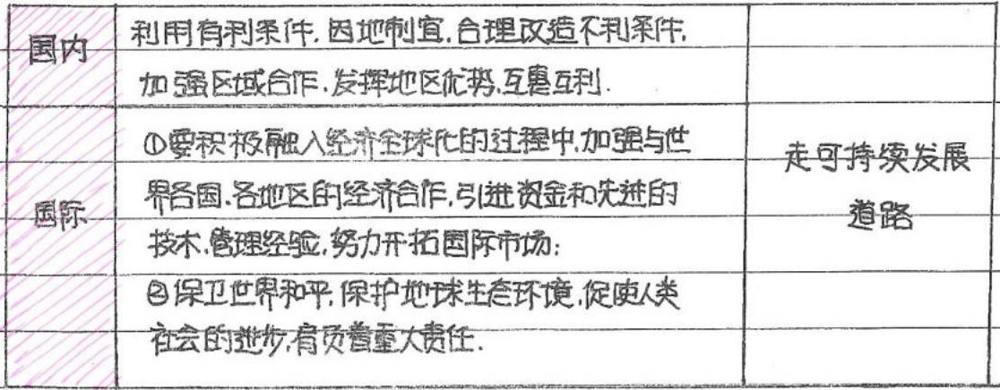
<table border="1"><tr><td rowspan="2">国内</td><td>利用有利条件，因地制宜，合理改造不利条件</td><td rowspan="4">走可持续发展道路</td></tr><tr><td>加强区域合作，发展地区优势，互利互惠。</td></tr><tr><td rowspan="2">国际</td><td>①要积极融入经济全球化的过程中，加强与世界各国、各地区的经济合作。引进资金和先进的技术，管理经验，努力开拓国际市场。</td></tr><tr><td>②保卫世界和平，保护地球生态环境，促使人类社会的进步，肩负着重大责任。</td></tr></table>| 国内 | 利用有利条件，因地制宜，合理改造不利条件 | 走可持续发展道路 |
| 加强区域合作，发展地区优势，互利互惠。 | ||
| 国际 | ①要积极融入经济全球化的过程中，加强与世界各国、各地区的经济合作。引进资金和先进的技术，管理经验，努力开拓国际市场。 | |
| ②保卫世界和平，保护地球生态环境，促使人类社会的进步，肩负着重大责任。 |
<table><tr><td>国内</td><td>利用有利条件，因地制宜，合理改造不利条件，加强区域合作，发挥地区优势，互惠互利。</td><td></td></tr><tr><td>国际</td><td>①要积极融入经济全球化的过程中，加强与世界各国、各地区的经济合作，引进资金和先进的技术，管理经验，努力开拓国际市场；②保卫世界和平，保护地球生态环境，促使人类社会的进步，有负责重大责任。</td><td>走可持续发展道路</td></tr></table>| 国内 | 利用有利条件，因地制宜，合理改造不利条件，加强区域合作，发挥地区优势，互惠互利。 | |
| 国际 | ①要积极融入经济全球化的过程中，加强与世界各国、各地区的经济合作，引进资金和先进的技术，管理经验，努力开拓国际市场；②保卫世界和平，保护地球生态环境，促使人类社会的进步，有负责重大责任。 | 走可持续发展道路 |
检测 IoU=0.95，框很准；预测把单元格多行文字和跨行结构拆成 7 行、5 个 rowspan。
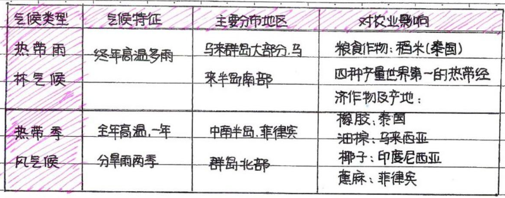
<table border="1"><tr><td>气候类型</td><td>气候特征</td><td>主要分布地区</td><td>对农业影响</td></tr><tr><td>热带雨林气候</td><td>终年高温多雨</td><td>马来群岛大部分、马来半岛南部</td><td rowspan="2">粮食作物：稻米（泰国）
四种产量世界第一的热带经济作物及产地：
橡胶：泰国
油棕：马来西亚
椰子：印度尼西亚
蕉麻：菲律宾</td></tr><tr><td>热带季风气候</td><td>全年高温，一年分旱雨两季</td><td>中南半岛、菲律宾群岛北部</td></tr></table>| 气候类型 | 气候特征 | 主要分布地区 | 对农业影响 |
| 热带雨林气候 | 终年高温多雨 | 马来群岛大部分、马来半岛南部 | 粮食作物：稻米（泰国） 四种产量世界第一的热带经济作物及产地： 橡胶：泰国 油棕：马来西亚 椰子：印度尼西亚 蕉麻：菲律宾 |
| 热带季风气候 | 全年高温，一年分旱雨两季 | 中南半岛、菲律宾群岛北部 |
<table><tr><td>气候类型</td><td>气候特征</td><td>主要分布地区</td><td>对农业影响</td></tr><tr><td rowspan="2">热带雨林气候</td><td rowspan="2">终年高温多雨</td><td>马来西亚大部分马来西亚</td><td>粮食作物：稻米（泰国）</td></tr><tr><td>来半岛南部</td><td>四种产量世界第一的热带经济作物及产地：</td></tr><tr><td rowspan="4">热带季风气候</td><td>全年高温，一年</td><td>中南半岛、菲律宾</td><td>橡胶、泰国</td></tr><tr><td rowspan="3">分旱雨雨季</td><td rowspan="3">群岛北部</td><td>油棕、马来西亚</td></tr><tr><td>椰子：印度尼西亚</td></tr><tr><td>蔗麻：菲律宾</td></tr></table>| 气候类型 | 气候特征 | 主要分布地区 | 对农业影响 |
| 热带雨林气候 | 终年高温多雨 | 马来西亚大部分马来西亚 | 粮食作物：稻米（泰国） |
| 来半岛南部 | 四种产量世界第一的热带经济作物及产地： | ||
| 热带季风气候 | 全年高温，一年 | 中南半岛、菲律宾 | 橡胶、泰国 |
| 分旱雨雨季 | 群岛北部 | 油棕、马来西亚 | |
| 椰子：印度尼西亚 | |||
| 蔗麻：菲律宾 |
GT 含空 <tr> 与大量 rowspan；预测压平成 6 行，并出现“砖瓦灯林”等错字。
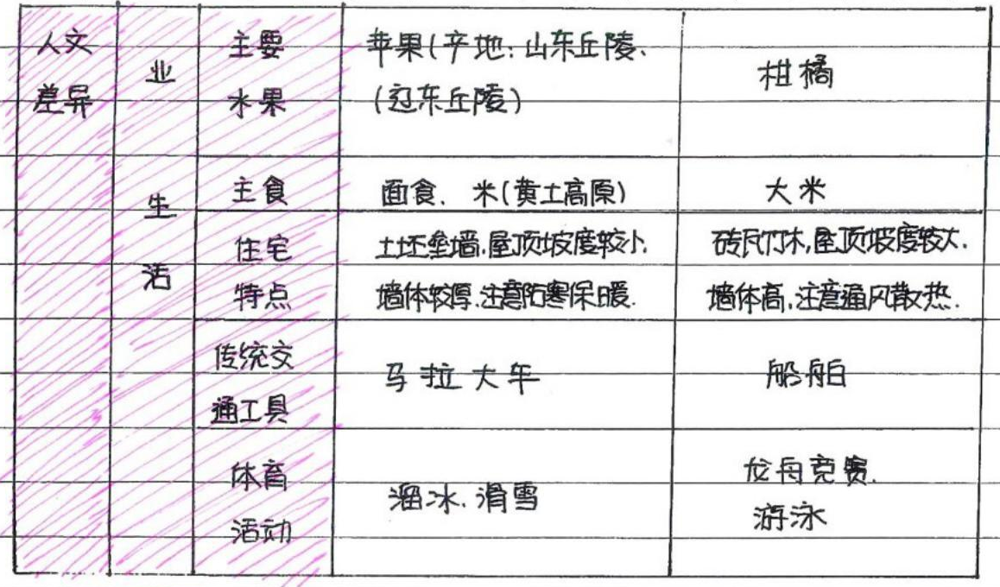
<table border="1"><tr><td rowspan="9">人文差异</td><td rowspan="2">业</td><td rowspan="2">主要水果</td><td rowspan="2">苹果（产地：山东丘陵.
（辽东丘陵）</td><td rowspan="2">柑橘</td></tr><tr></tr><tr><td rowspan="7">生活</td><td>主食</td><td>面食.米（黄土高原）</td><td>大米</td></tr><tr><td>住宅</td><td>土坯垒墙，屋顶坡度较小。</td><td>砖瓦竹木，屋顶坡度较大。</td></tr><tr><td>特点</td><td>墙体较厚，注意防寒保暖。</td><td>墙体高，注意通风散热。</td></tr><tr><td rowspan="2">传统交
通工具</td><td rowspan="2">马拉大车</td><td rowspan="2">船舶</td></tr><tr></tr><tr><td rowspan="2">体育活动</td><td rowspan="2">溜冰、滑雪</td><td rowspan="2">龙舟竞赛、游泳</td></tr><tr></tr></table>| 人文差异 | 业 | 主要水果 | 苹果（产地：山东丘陵. （辽东丘陵） | 柑橘 |
| 生活 | 主食 | 面食.米（黄土高原） | 大米 | |
| 住宅 | 土坯垒墙，屋顶坡度较小。 | 砖瓦竹木，屋顶坡度较大。 | ||
| 特点 | 墙体较厚，注意防寒保暖。 | 墙体高，注意通风散热。 | ||
| 传统交 通工具 | 马拉大车 | 船舶 | ||
| 体育活动 | 溜冰、滑雪 | 龙舟竞赛、游泳 | ||
<table><tr><td rowspan="6">人文差异</td><td>业</td><td>主要水果</td><td>苹果（产地：山东丘陵、（辽东丘陵）</td><td>柑橘</td></tr><tr><td rowspan="5">生活</td><td>主食</td><td>面食、米（黄土高原）</td><td>大米</td></tr><tr><td>住宅</td><td>土坯垒墙、屋顶坡度较小</td><td>砖瓦灯林、屋顶坡度较大</td></tr><tr><td>特点</td><td>墙体较厚、注意防寒保暖</td><td>墙体高、注意通风散热</td></tr><tr><td>传统交通工具</td><td>马拉大车</td><td>船舶</td></tr><tr><td>体育活动</td><td>溜冰、滑雪</td><td>龙舟竞赛、游泳</td></tr></table>| 人文差异 | 业 | 主要水果 | 苹果（产地：山东丘陵、（辽东丘陵） | 柑橘 |
| 生活 | 主食 | 面食、米（黄土高原） | 大米 | |
| 住宅 | 土坯垒墙、屋顶坡度较小 | 砖瓦灯林、屋顶坡度较大 | ||
| 特点 | 墙体较厚、注意防寒保暖 | 墙体高、注意通风散热 | ||
| 传统交通工具 | 马拉大车 | 船舶 | ||
| 体育活动 | 溜冰、滑雪 | 龙舟竞赛、游泳 |
预测首行格子为空，内容错位；tr 3→6。
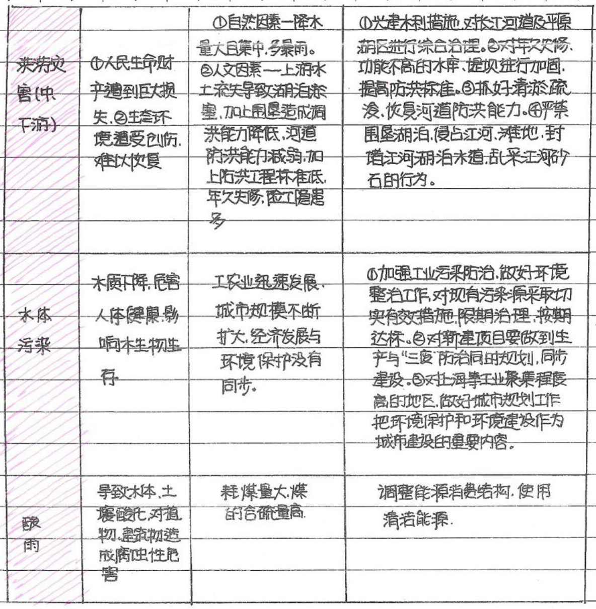
<table border="1"><tr><td>洪涝灾害（中下游）</td><td>①人民生命财产遭到巨大损失②生态环境遭受创伤，难以恢复</td><td>①自然因素-降水量大且集中，多暴雨。②人文因素-上游水土流失导致湖泊淤塞，加上围垦造成调洪能力降低，河道防洪能力减弱，加上防洪工程标准低，年久失修，险工隐患多。</td><td>①兴建水利措施，对长江河道及平原湖区进行综合治理。②对年久失修，功能不高的水库、堤坝进行加固，提高防洪标准。③抓好清淤疏浚，恢复河道防洪能力④严禁围垦湖泊、侵占江河、滩地，封堵江河湖泊水道，乱采江河砂石的行为。</td></tr><tr><td>水体污染</td><td>水质下降，危害人体健康，影响水生物生存</td><td>工农业迅速发展，城市规模不断扩大，经济发展与环境保护没有同步。</td><td>①加强工业污染防治，做好环境整治工作，对现有污染源采取切实有效措施限期治理，按期达标。②对新建项目要做到生产与“三废”防治同时规划，同步建设。③对上海等工业聚集程度高的地区，做好城市规划工作，把环境保护和环境建设作为城市建设的重要内容。</td></tr><tr><td>酸雨</td><td>导致水体、土壤、酸化，对植物、建筑物造成腐蚀性危害。</td><td>耗煤量大，煤的含硫量高。</td><td>调整能源消费结构，使用清洁能源。</td></tr></table>| 洪涝灾害（中下游） | ①人民生命财产遭到巨大损失②生态环境遭受创伤，难以恢复 | ①自然因素-降水量大且集中，多暴雨。②人文因素-上游水土流失导致湖泊淤塞，加上围垦造成调洪能力降低，河道防洪能力减弱，加上防洪工程标准低，年久失修，险工隐患多。 | ①兴建水利措施，对长江河道及平原湖区进行综合治理。②对年久失修，功能不高的水库、堤坝进行加固，提高防洪标准。③抓好清淤疏浚，恢复河道防洪能力④严禁围垦湖泊、侵占江河、滩地，封堵江河湖泊水道，乱采江河砂石的行为。 |
| 水体污染 | 水质下降，危害人体健康，影响水生物生存 | 工农业迅速发展，城市规模不断扩大，经济发展与环境保护没有同步。 | ①加强工业污染防治，做好环境整治工作，对现有污染源采取切实有效措施限期治理，按期达标。②对新建项目要做到生产与“三废”防治同时规划，同步建设。③对上海等工业聚集程度高的地区，做好城市规划工作，把环境保护和环境建设作为城市建设的重要内容。 |
| 酸雨 | 导致水体、土壤、酸化，对植物、建筑物造成腐蚀性危害。 | 耗煤量大，煤的含硫量高。 | 调整能源消费结构，使用清洁能源。 |
<table><tr><td></td><td></td><td>①自然因素—降水</td><td>①兴建水利措施，对长江河道及平原</td></tr><tr><td>炎劳灾害（中、下游）</td><td>①人民生命财产遭到巨大损失，②生态环境遭受包伤，难以恢复</td><td>量大且集中，多暴雨。②人文因素—上游水土流失导致湖泊涂墨，加上围垦造成凋</td><td>湖区进行涂合治理。②对年次欠修、功能不高的水库、堤坝进行加固，提高防洪标准。③抓好清淤疏浚，恢复河道防洪能力。④严禁围垦湖泊，使占江河、滩地、封塔江河湖泊水道，乱采江河砂石的行为。</td></tr><tr><td></td><td></td><td>洪能力降低，河道防洪能力减弱，加上防洪工程标准低，年久失修，施工隐患多</td><td></td></tr><tr><td>水体污染</td><td>水质下降，危害人体健康，影响水生物生存</td><td>工农业迅速发展，城市规模不断扩大，经济发展与环境保护没有同步。</td><td>①加强工业污染防治，做好环境整治工作，对现有污染源采取切实有效措施，限期治理，按期达标。②对新建项目要做到生产与“三废”防治同时规划，同步建设。③对上海等工业聚集程度高的地区，做好城市规划工作</td></tr><tr><td></td><td></td><td></td><td>把环境保护和环境建设作为城市建设的重要内容。</td></tr><tr><td>酸雨</td><td>导致水体、土壤酸化，对植物、建筑物造成腐蚀性危害</td><td>精煤量大，煤的含硫量高。</td><td>调整能源消费结构，使用清洁能源。</td></tr></table>| ①自然因素—降水 | ①兴建水利措施，对长江河道及平原 | ||
| 炎劳灾害（中、下游） | ①人民生命财产遭到巨大损失，②生态环境遭受包伤，难以恢复 | 量大且集中，多暴雨。②人文因素—上游水土流失导致湖泊涂墨，加上围垦造成凋 | 湖区进行涂合治理。②对年次欠修、功能不高的水库、堤坝进行加固，提高防洪标准。③抓好清淤疏浚，恢复河道防洪能力。④严禁围垦湖泊，使占江河、滩地、封塔江河湖泊水道，乱采江河砂石的行为。 |
| 洪能力降低，河道防洪能力减弱，加上防洪工程标准低，年久失修，施工隐患多 | |||
| 水体污染 | 水质下降，危害人体健康，影响水生物生存 | 工农业迅速发展，城市规模不断扩大，经济发展与环境保护没有同步。 | ①加强工业污染防治，做好环境整治工作，对现有污染源采取切实有效措施，限期治理，按期达标。②对新建项目要做到生产与“三废”防治同时规划，同步建设。③对上海等工业聚集程度高的地区，做好城市规划工作 |
| 把环境保护和环境建设作为城市建设的重要内容。 | |||
| 酸雨 | 导致水体、土壤酸化，对植物、建筑物造成腐蚀性危害 | 精煤量大，煤的含硫量高。 | 调整能源消费结构，使用清洁能源。 |
一张 GT 表被切成多个预测块，或表头与主体分离，导致匹配失败。
预测两个 Table 块分别只有表头碎片和后半身；“第一级阶梯 / 4000米以上”整块丢失。
<table border="1"><tr><td>阶梯名称</td><td>海拔高度</td><td>主要地形类型</td><td>主要地形区</td></tr><tr><td>第一级阶梯</td><td>4000米以上</td><td>高原</td><td>青藏高原、柴达木盆地</td></tr><tr><td colspan="4">界线：昆仑山-祁连山-横断山脉东缘</td></tr><tr><td>第二级阶梯</td><td>1000～2000米</td><td>高原、盆地</td><td>内蒙古高原、云贵高原、黄土高原、四川盆地、塔里木盆地、准噶尔盆地</td></tr><tr><td>第三级阶梯</td><td>500米以下</td><td>丘陵、山地、平原、盆地相间分布</td><td>东南丘陵、东北平原、华北平原、长江中下游平原</td></tr></table>| 阶梯名称 | 海拔高度 | 主要地形类型 | 主要地形区 |
| 第一级阶梯 | 4000米以上 | 高原 | 青藏高原、柴达木盆地 |
| 界线：昆仑山-祁连山-横断山脉东缘 | |||
| 第二级阶梯 | 1000～2000米 | 高原、盆地 | 内蒙古高原、云贵高原、黄土高原、四川盆地、塔里木盆地、准噶尔盆地 |
| 第三级阶梯 | 500米以下 | 丘陵、山地、平原、盆地相间分布 | 东南丘陵、东北平原、华北平原、长江中下游平原 |
<table><tr><td></td><td></td><td></td><td>内蒙古高原、云贵高原黄</td></tr><tr><td>第二级阶梯</td><td>1000~2000米</td><td>高原、盆地</td><td>土高原、四川盆地、塔里梅</td></tr><tr><td></td><td></td><td></td><td>地、准噶尔盆地</td></tr><tr><td></td><td></td><td>丘陵、山地、平</td><td>东南丘陵、东北平原</td></tr><tr><td>第三级阶梯</td><td>500米以下</td><td>原、盆地相</td><td>华北平原、长江中下</td></tr><tr><td></td><td></td><td>间分布</td><td>游平原</td></tr></table>| 内蒙古高原、云贵高原黄 | |||
| 第二级阶梯 | 1000~2000米 | 高原、盆地 | 土高原、四川盆地、塔里梅 |
| 地、准噶尔盆地 | |||
| 丘陵、山地、平 | 东南丘陵、东北平原 | ||
| 第三级阶梯 | 500米以下 | 原、盆地相 | 华北平原、长江中下 |
| 间分布 | 游平原 |
GT 是 4 列 $1^{st}$ first 形式；预测拆成 8 列纯文本，上标与 tenth 识别均有误。
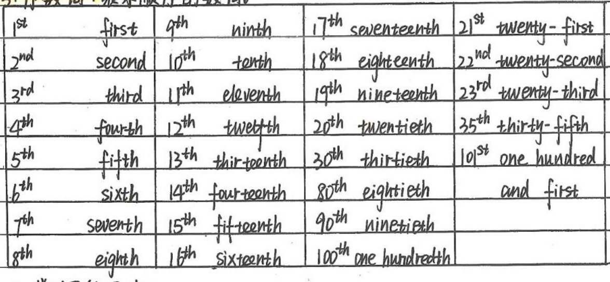
<table border="1"><tr><td>$1^{st}$ first</td><td>$9^{th}$ ninth</td><td>$17^{th}$ seventeenth</td><td>$21^{st}$ twenty-first</td></tr><tr><td>$2^{nd}$ second</td><td>$10^{th}$ tenth</td><td>$18^{th}$ eighteenth</td><td>$22^{nd}$ twenty-second</td></tr><tr><td>$3^{rd}$ third</td><td>$11^{th}$ eleventh</td><td>$19^{th}$ nineteenth</td><td>$23^{rd}$ twenty-third</td></tr><tr><td>$4^{th}$ fourth</td><td>$12^{th}$ twelfth</td><td>$20^{th}$ twentieth</td><td>$35^{th}$ thirty-fifth</td></tr><tr><td>$5^{th}$ fifth</td><td>$13^{th}$ thirteenth</td><td>$30^{th}$ thirtieth</td><td>$101^{st}$ one hundred </td></tr><tr><td>$6^{th}$ sixth</td><td>$14^{th}$ fourteenth</td><td>$80^{th}$ eightieth</td><td>and first</td></tr><tr><td>$7^{th}$ seventh</td><td>$15^{th}$ fifteenth</td><td>$90^{th}$ ninetieth</td><td></td></tr><tr><td>$8^{th}$ eighth</td><td>$16^{th}$ sixteenth</td><td>$100^{th}$ one hundredth</td><td></td></tr></table>| $1^{st}$ first | $9^{th}$ ninth | $17^{th}$ seventeenth | $21^{st}$ twenty-first |
| $2^{nd}$ second | $10^{th}$ tenth | $18^{th}$ eighteenth | $22^{nd}$ twenty-second |
| $3^{rd}$ third | $11^{th}$ eleventh | $19^{th}$ nineteenth | $23^{rd}$ twenty-third |
| $4^{th}$ fourth | $12^{th}$ twelfth | $20^{th}$ twentieth | $35^{th}$ thirty-fifth |
| $5^{th}$ fifth | $13^{th}$ thirteenth | $30^{th}$ thirtieth | $101^{st}$ one hundred |
| $6^{th}$ sixth | $14^{th}$ fourteenth | $80^{th}$ eightieth | and first |
| $7^{th}$ seventh | $15^{th}$ fifteenth | $90^{th}$ ninetieth | |
| $8^{th}$ eighth | $16^{th}$ sixteenth | $100^{th}$ one hundredth |
<table><tr><td>1st</td><td>first</td><td>9th</td><td>ninth</td><td>17th</td><td>seventeenth</td><td>21st</td><td>twenty-first</td></tr><tr><td>2nd</td><td>second</td><td>10th</td><td>teenth</td><td>18th</td><td>eighteenth</td><td>22nd</td><td>twenty-second</td></tr><tr><td>3rd</td><td>third</td><td>11th</td><td>eleventh</td><td>19th</td><td>nineteenth</td><td>23rd</td><td>twenty-third</td></tr><tr><td>4th</td><td>fourth</td><td>12th</td><td>twelfth</td><td>20th</td><td>twentieth</td><td>35th</td><td>thirty-fifth</td></tr><tr><td>5th</td><td>fifth</td><td>13th</td><td>thirteenth</td><td>30th</td><td>thirtieth</td><td>101st</td><td>one hundred</td></tr><tr><td>6th</td><td>sixth</td><td>14th</td><td>fourteenth</td><td>80th</td><td>eightieth</td><td>and first</td><td></td></tr><tr><td>7th</td><td>seventh</td><td>15th</td><td>fifteenth</td><td>90th</td><td>ninetieth</td><td></td><td></td></tr><tr><td>8th</td><td>eighth</td><td>16th</td><td>sixteenth</td><td>100th</td><td>one hundredth</td><td></td><td></td></tr></table>| 1st | first | 9th | ninth | 17th | seventeenth | 21st | twenty-first |
| 2nd | second | 10th | teenth | 18th | eighteenth | 22nd | twenty-second |
| 3rd | third | 11th | eleventh | 19th | nineteenth | 23rd | twenty-third |
| 4th | fourth | 12th | twelfth | 20th | twentieth | 35th | thirty-fifth |
| 5th | fifth | 13th | thirteenth | 30th | thirtieth | 101st | one hundred |
| 6th | sixth | 14th | fourteenth | 80th | eightieth | and first | |
| 7th | seventh | 15th | fifteenth | 90th | ninetieth | ||
| 8th | eighth | 16th | sixteenth | 100th | one hundredth |
内容被截断、中文变量误识、或评测匹配到无关公式。
原图是梯形面积 =½(AD+BC)×高。公式嵌在 Text 里，“高”认成 1/10；评测还匹配到无关的面积比公式。
GT 含“四边形ABCD / 9×高 / √231”；预测下标与根号内容严重走形。
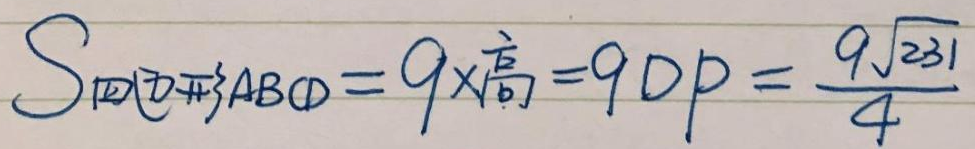
GT 是 (P=(2+4+5)/2=11/2)；预测多出 =√… 等无关尾巴，IoU=0.26。
检测框与 GT 几乎不重合，CDM=0.65 不能代表框定位正确。
结构大致在，但字词、标点、数学符号有错。单看 CDM/TEDS 可能仍不低。
检测框准；行被拆、部分文字与换行处理不一致。
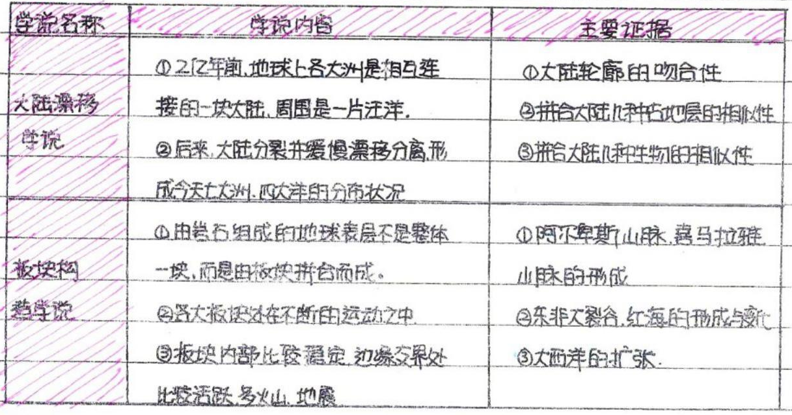
<table><tr><td>学说名称</td><td>学说内容</td><td>主要证据</td></tr><tr><td>大陆漂移学说</td><td>①2亿年前，地球上各大洲是相互连接的一块大陆，周围是一片汪洋。<br>②后来，大陆分裂并缓慢漂移分离形成今天的七大洲，四大洋的分布状况</td><td>①大陆轮廓的吻合性<br>②拼合大陆几种古地层的相似性<br>③拼合大陆几种生物的相似性</td></tr><tr><td>板块构造学说</td><td>①由岩石组成的地球表层不是整体一块，而是由板块拼合而成。<br>②各大板块还在不断的运动之中③板块内部比较稳定，边缘交界处比较活跃多火山地震<br></td><td>①阿尔卑斯山脉、喜马拉雅山脉的形成<br>②东非大裂谷、红海的形成与变化<br>③大西洋的扩张</td></tr></table>| 学说名称 | 学说内容 | 主要证据 |
| 大陆漂移学说 | ①2亿年前，地球上各大洲是相互连接的一块大陆，周围是一片汪洋。 ②后来，大陆分裂并缓慢漂移分离形成今天的七大洲，四大洋的分布状况 | ①大陆轮廓的吻合性 ②拼合大陆几种古地层的相似性 ③拼合大陆几种生物的相似性 |
| 板块构造学说 | ①由岩石组成的地球表层不是整体一块，而是由板块拼合而成。 ②各大板块还在不断的运动之中③板块内部比较稳定，边缘交界处比较活跃多火山地震 | ①阿尔卑斯山脉、喜马拉雅山脉的形成 ②东非大裂谷、红海的形成与变化 ③大西洋的扩张 |
<table><tr><td>学说名称</td><td>学说内容</td><td>主要证据</td></tr><tr><td>大陆漂移学说</td><td>①2/2年前，地球上各大洲是相互连接的一块大陆，周围是一片汪洋。②后来，大陆分裂并缓慢漂移分离，形成今天七大洲，四大洋的分布状况</td><td>①大陆轮廓的吻合性②拼合大陆几种古地层的相似性③拼合大陆几种生物的相似性</td></tr><tr><td>板块构</td><td>①由总石组成的地球表层不是整体一块，而是由板块拼合而成。</td><td>①阿不卑斯山脉，喜马拉雅，山脉的形成</td></tr><tr><td>热学说</td><td>②各大板块达在不断的运动之中。③板块内部比较稳定，边缘交界处比较活跃，多火山、地震</td><td>②东非大裂谷，红海的形成与变化③大西洋的扩张</td></tr></table>| 学说名称 | 学说内容 | 主要证据 |
| 大陆漂移学说 | ①2/2年前，地球上各大洲是相互连接的一块大陆，周围是一片汪洋。②后来，大陆分裂并缓慢漂移分离，形成今天七大洲，四大洋的分布状况 | ①大陆轮廓的吻合性②拼合大陆几种古地层的相似性③拼合大陆几种生物的相似性 |
| 板块构 | ①由总石组成的地球表层不是整体一块，而是由板块拼合而成。 | ①阿不卑斯山脉，喜马拉雅，山脉的形成 |
| 热学说 | ②各大板块达在不断的运动之中。③板块内部比较稳定，边缘交界处比较活跃，多火山、地震 | ②东非大裂谷，红海的形成与变化③大西洋的扩张 |
Edit≈0.97，几乎整表文字序列都偏；跨行从 1 变 6。
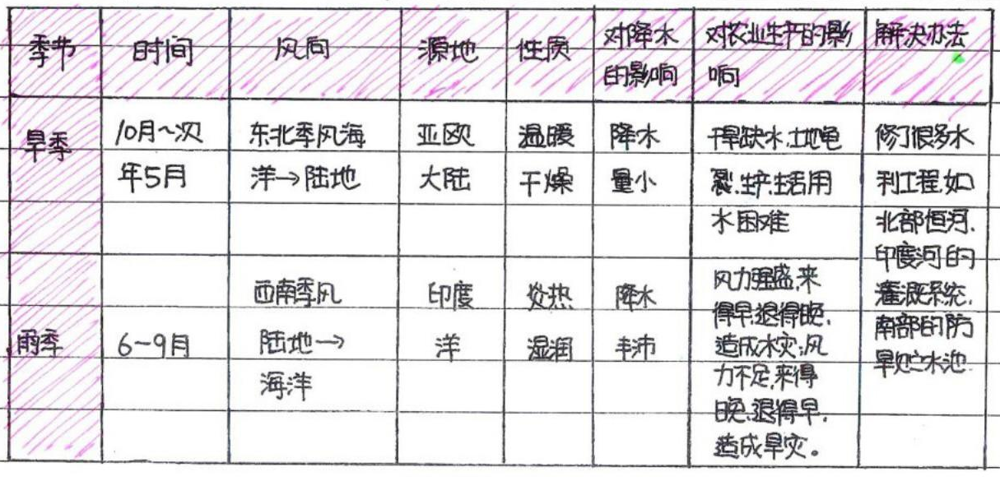
<table border="1"><tr><td>季节</td><td>时间</td><td>风向</td><td>源地</td><td>性质</td><td>对降水的影响</td><td>对农业生产的影响</td><td>解决办法</td></tr><tr><td>旱季</td><td>10月～次年5月</td><td>东北季风海洋→陆地</td><td>亚欧大陆</td><td>温暖干燥</td><td>降水量小</td><td>干旱缺水，土地龟裂，生产生活用水困难</td><td rowspan="2">修了很多水利工程，如北部恒河，印度河的灌溉系统，南部的防旱贮水池</td></tr><tr><td>雨季</td><td>6-9月</td><td>西南季风陆地→海洋</td><td>印度洋</td><td>炎热湿润</td><td>降水丰沛</td><td>风力强盛来得早退得晚，造成水灾，风力不足来得晚退得早，造成旱灾。</td></tr></table>| 季节 | 时间 | 风向 | 源地 | 性质 | 对降水的影响 | 对农业生产的影响 | 解决办法 |
| 旱季 | 10月～次年5月 | 东北季风海洋→陆地 | 亚欧大陆 | 温暖干燥 | 降水量小 | 干旱缺水，土地龟裂，生产生活用水困难 | 修了很多水利工程，如北部恒河，印度河的灌溉系统，南部的防旱贮水池 |
| 雨季 | 6-9月 | 西南季风陆地→海洋 | 印度洋 | 炎热湿润 | 降水丰沛 | 风力强盛来得早退得晚，造成水灾，风力不足来得晚退得早，造成旱灾。 |
<table><tr><td>季节</td><td>时间</td><td>风向</td><td>源地</td><td>性质</td><td>对降水的影响</td><td>对农业生产的影响</td><td>解决办法</td></tr><tr><td rowspan="2">旱季</td><td rowspan="2">/0月～次年5月</td><td rowspan="2">东北季风海洋→陆地</td><td rowspan="2">亚欧大陆</td><td rowspan="2">温暖干燥</td><td rowspan="2">降水量小</td><td>干燥缺水，土地 </td><td>修了很多水</td></tr><tr><td>裂，\,\,\,\,\,\,\,\,\,\,\,\,\,\,\,\,\,\,\,\,\,\,\,\,\,\,\,\,\,\,\,\,\,\,\,\,\,\,\,\,\,\,\,\,\,\,\,\,\,\,\,\,\,\,\,\,\,\,\,\,\,\,\,\,\,\,\,\,\,\,\,\,\,\,\,\,\,\,\,\,\,\,\,\,\,\,\,\,\,\,\,\,\,\,\,\,\,\,\,\,\,\,\,\,\,\,\,\,\,\,\,\,\,\,\,\,\,\,\,\,\,\,\,\,\,\,\,\,\,\,\,\,\,\,\,\,\,\,\,\,\,\,\,\,\,\,\,\,\,\,\,\,\,\,\,\,\,\,\,\,\,\,\,\,\,\,\,\,\,\,\,\,\,\,\,\,\,\,\,\,\,\,\,\,\,\,\,\,\,\,\,\,\,\,\,\,\,\,\,\,\,\,\,\,\,\,\,\,\,\,\,\,\,\,\,\,\,\,\,\,\,\,\,\,\,\,\,\,\,\,\,\,\,\,\,\,\,\,\,\,\,\,\,\,\,\,\,\,\,\,\,\,\,\,\,\,\,\,\,\,\,\,\, \,\,\,\,\,\,\,\,\,\,\,\,\,\,\,\,\,\,\,\,\,\,\,\,\,\,\,\,\,\,\,\,\,\,\,\,\,\,\,\,\,\,\,\,\,\,\,\,\,\,\,\,\,\,\,\,\,\,\,\,\,\,\,\,\,\,\,\,\,\,\,\,\,\,\,\,\,\,\,\,\,\,\,\,\,\,\,\,\,\,\,\,\,\,\,\,\,\,\,\,\,\,\,\,\,\,\,\,\,\,\,\,\,\,\,\,\,\,\,\,\,\,\,\,\,\,\,\,\,\,\,\,\,\,\,\,\,\,\,\,\,\,\,\,\,\,\,\,\,\,\,\,\,\,\,\,\,\,\,\,\,\,\,\,\,\,\,\,\,\,\,\,\,\,\,\,\,\,\,\,\,\,\,\,\,\,\,\,\,\,\,\,\,\,\,\,\,\,\,\,\,\,\,\,\,\,\,\,\,\,\,\,\,\,\,\,\,\,\,\,\,\,\,\,\,\,\,\,\,\,\,\,\,\,\,\,\,\,\,\,\,\,\,\,\,\,\,\,\,\,\,\,\,\,\,\,\,\,\,\,\,\,\,\,\,\,\,\,\,\,\,\,\,\,\,\,\,\,\,\,\,\,\,\,\,\,\,\,\,\,\,\,\,\,\,\,\,\,\,\,\,\,\,\,\,\,\,\,\,\,\,\,\,\,\,\,\,\,\,\,\,\,\,\,\,\,\,\,\,\,\,\,\,\,\,\,\,\,\,\,\,\,\,\,\,\,\,\,\,\,\,\,\,\,\,\,\,\,\,\,\,\,\,\,\,\,\,\,\,\,\,\,\,\,\,\,\,\,\,\,\,\,\,\,\,\,\,\,\,\,\,\,\,\,\,\,\,\,\,\,\,\,\,\,\,\,\,\,\,\,\,\,\,\,\,\,\,\,\,\,\,\,\,\,\,\,\,\,\,\,\,\,\,\,\,\,\,\,\,\,\,\,\,\,\,\,\,\,\,\,\,\,\,\,\,\,\,\,\,\,\,\,\,\,\,\,\,\,\,\,\,\,| 季节 | 时间 | 风向 | 源地 | 性质 | 对降水的影响 | 对农业生产的影响 | 解决办法 |
| 旱季 | /0月～次年5月 | 东北季风海洋→陆地 | 亚欧大陆 | 温暖干燥 | 降水量小 | 干燥缺水，土地 </td> | 修了很多水 |
裂，\,\,\,\,\,\,\,\,\,\,\,\,\,\,\,\,\,\,\,\,\,\,\,\,\,\,\,\,\,\,\,\,\,\,\,\,\,\,\,\,\,\,\,\,\,\,\,\,\,\,\,\,\,\,\,\,\,\,\,\,\,\,\,\,\,\,\,\,\,\,\,\,\,\,\,\,\,\,\,\,\,\,\,\,\,\,\,\,\,\,\,\,\,\,\,\,\,\,\,\,\,\,\,\,\,\,\,\,\,\,\,\,\,\,\,\,\,\,\,\,\,\,\,\,\,\,\,\,\,\,\,\,\,\,\,\,\,\,\,\,\,\,\,\,\,\,\,\,\,\,\,\,\,\,\,\,\,\,\,\,\,\,\,\,\,\,\,\,\,\,\,\,\,\,\,\,\,\,\,\,\,\,\,\,\,\,\,\,\,\,\,\,\,\,\,\,\,\,\,\,\,\,\,\,\,\,\,\,\,\,\,\,\,\,\,\,\,\,\,\,\,\,\,\,\,\,\,\,\,\,\,\,\,\,\,\,\,\,\,\,\,\,\,\,\,\,\,\,\,\,\,\,\,\,\,\,\,\,\,\,\,\,\, \,\,\,\,\,\,\,\,\,\,\,\,\,\,\,\,\,\,\,\,\,\,\,\,\,\,\,\,\,\,\,\,\,\,\,\,\,\,\,\,\,\,\,\,\,\,\,\,\,\,\,\,\,\,\,\,\,\,\,\,\,\,\,\,\,\,\,\,\,\,\,\,\,\,\,\,\,\,\,\,\,\,\,\,\,\,\,\,\,\,\,\,\,\,\,\,\,\,\,\,\,\,\,\,\,\,\,\,\,\,\,\,\,\,\,\,\,\,\,\,\,\,\,\,\,\,\,\,\,\,\,\,\,\,\,\,\,\,\,\,\,\,\,\,\,\,\,\,\,\,\,\,\,\,\,\,\,\,\,\,\,\,\,\,\,\,\,\,\,\,\,\,\,\,\,\,\,\,\,\,\,\,\,\,\,\,\,\,\,\,\,\,\,\,\,\,\,\,\,\,\,\,\,\,\,\,\,\,\,\,\,\,\,\,\,\,\,\,\,\,\,\,\,\,\,\,\,\,\,\,\,\,\,\,\,\,\,\,\,\,\,\,\,\,\,\,\,\,\,\,\,\,\,\,\,\,\,\,\,\,\,\,\,\,\,\,\,\,\,\,\,\,\,\,\,\,\,\,\,\,\,\,\,\,\,\,\,\,\,\,\,\,\,\,\,\,\,\,\,\,\,\,\,\,\,\,\,\,\,\,\,\,\,\,\,\,\,\,\,\,\,\,\,\,\,\,\,\,\,\,\,\,\,\,\,\,\,\,\,\,\,\,\,\,\,\,\,\,\,\,\,\,\,\,\,\,\,\,\,\,\,\,\,\,\,\,\,\,\,\,\,\,\,\,\,\,\,\,\,\,\,\,\,\,\,\,\,\,\,\,\,\,\,\,\,\,\,\,\,\,\,\,\,\,\,\,\,\,\,\,\,\,\,\,\,\,\,\,\,\,\,\,\,\,\,\,\,\,\,\,\,\,\,\,\,\,\,\,\,\,\,\,\,\,\,\,\,\,\,\,\,\,\,\,\,\,\,\,\,\,\,\,\,\,\,\,\,\,\,\,\,\,\,\,\,\,\,\,\,\,\,\,\,\,\,\,\,\,\,\,\,\,\,\,\,\,\,\,\,\,\,\,\,\,\,\,\,\,\,\,\,\,\,\,\,\,\,\,\,\,\,\,\,\,\,\,\,\,\,\,\,\,\,\,\,\,\,\,\,\,\,\,\,\,\,\,\,\,\,\,\,\,\,\,\,\,\,\,\,\,\,\,\,\,\,\,\,\,\,\,\,\,\,\,\,\,\,\,\,\,\,\,\,\,\,\,\,\,\,\,\,\,\,\,\,\,\,\,\,\,\,\,\,\,\,\,\,\,\,\,\,\,\,\,\,\,\,\,\,\,\,\,\,\,\,\,\,\,\,\,\,\,\,\,\,\,\,\,\,\,\,\,\,\,\,\,\,\,\,\,\,\,\,\,\,\,\,\,\,\,\,\,\,\,\,\,\,\,\,\,\,\,\,\,\,\,\,\,\,\,\,\,\,\,\,\,\,\,\,\,\,\,\,\,\,\,\,\,\,\,\,\,\,\,\,\,\,\,\,\,\,\,\,\,\,\,\,\,\,\,\,\,\,\,\,\,\,\,\,\,\,\,\,\,\,\,\,\,\,\,\,\,\,\,\,\,\,\,\,\,\,\,\,\,\,\,\,\,\,\,\,\,\,\,\,\,\,\,\,\,\,\,\,\,\,\,\,\,\,\,\,\,\,\,\,\,\,\,\,\,\,\,\,\,\,\,\,\,\,\,\,\,\,\,\,\,\,\,\,\,\,\,\,\,\,\,\,\,\,\,\,\,\,\,\,\,\,\,\,\,\,\,\,\,\,\,\,\,\,\,\,\,\,\,\,\,\,\,\,\,\,\,\,\,\,\,\,\,\,\,\,\,\,\,\,\,\,\,\,\,\,\,\,\,\,\,\,\,\,\,\,\,\,\,\,\,\,\,\,\,\,\,\,\,\,\,\,\,\,\,\,\,\,\,\,\,\,\,\,\,\,\,\,\,\,\,\,\,\,\,\,\,\,\,\,\,\,\,\,\,\,\,\,\,\,\,\,\,\,\,\,\,\,\,\,\,\,\,\,\,\,\,\,\,\,\,\,\,\,\,\,\,\,\,\,\,\,\,\,\,\,\,\,\,\,\,\,\,\,\,\,\,\,\,\,\,\,\,\,\,\,\,\,\,\,\,\,\,\,\,\,\,\,\,\,\,\,\,\,\,\,\,\,\,\,\,\,\,\,\,\,\,\,\,\,\,\,\,\,\,\,\,\,\,\,\,\,\,\,\,\,\,\,\,\,\,\,\,\,\,\,\,\,\,\,\,\,\,\,\,\,\,\,\,\,\,\,\,\,\,\,\,\,\,\,\,\,\,\,\,\,\,\,\,\,\,\,\,\,\,\,\,\,\,\,\,\,\,\,\,\,\,\,\,\,\,\,\,\,\,\,\,\,\,\,\,\,\,\,\,\,\,\,\,\,\,\,\,\,\,\,\,\,\,\,\,\,\,\,\,\,\,\,\,\,\,\,\,\,\,\,\,\,\,\,\,\,\,\,\,\,\,\,\,\,\,\,\,\,\,\,\,\,\,\,\,\,\,\,\,\,\,\,\,\,\,\,\,\,\,\,\,\,\,\,\,\,\,\,\,\,\,\,\,\,\,\,\,\,\,\,\,\,\,\,\,\,\,\,\,\,\,\,\,\,\,\,\,\,\,\,\,\,\,\,\,\,\,\,\,\,\,\,\,\,\,\,\,\,\,\,\,\,\,\,\,\,\,\,\,\,\,\,\,\,\,\,\,\,\,\,\,\,\,\,\,\,\,\,\,\,\,\,\,\,\,\,\,\,\,\,\,\,\,\,\,\,\,\,\,\,\,\,\,\,\,\,\,\,\,\,\,\,\,\,\,\,\,\,\,\,\,\,\,\,\,\,\,\,\,\,\,\,\,\,\,\,\,\,\,\,\,\,\,\,\,\,\,\,\,\,\,\,\,\,\,\,\,\,\,\,\,\,\,\,\,\,\,\,\,\,\,\,\,\,\,\,\,\,\,\,\,\,\,\,\,\,\,\,\,\,\,\,\,\,\,\,\,\,\,\,\,\,\,\,\,\,\,\,\,\,\,\,\,\,\,\,\,\,\,\,\,\,\,\,\,\,\,\,\,\,\,\,\,\,\,\,\,\,\,\,\,\,\,\,\,\,\,\,\,\,\,\,\,\,\,\,\,\,\,\,\,\,\,\,\,\,\,\,\,\,\,\,\,\,\,\,\,\,\,\,\,\,\,\,\,\,\,\,\,\,\,\,\,\,\,\,\,\,\,\,\,\,\,\,\,\,\,\,\,\,\,\,\,\,\,\,\,\,\,\,\,\,\,\,\,\,\,\,\,\,\,\,\,\,\,\,\,\,\,\,\,\,\,\,\,\,\,\,\,\,\,\,\,\,\,\,\,\,\,\,\,\,\,\,\,\,\,\,\,\,\,
分数/符号级差异 CDM=0.75语义接近但 LaTeX 表达不一致，指标与“是否可读”不完全同向。 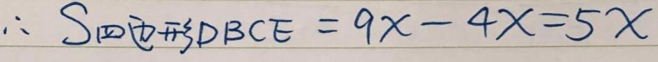 标注 GT$\therefore S_{\text{四边形DBCE}}=9 x-4 x=5 x$ MonkeyOCR 预测$$
\therefore S _ { \textcircled { 1 } } = S _ { \textcircled { 2 } } + S _ { \textcircled { 3 } } D B C E = 9 x - 4 x = 5 x
$$
|